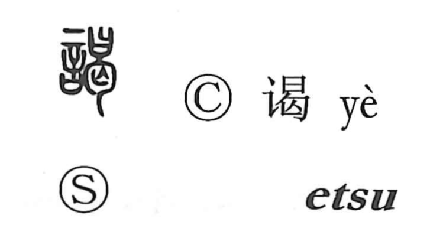

謁

Uncategorized
Kun: | On: etsu
to have an audience ・ audience ・ to make a formal visit
Explanation
A phono-semantic character, 謁 combines the speech element 言 with the phonetic 曷. Shirakawa reads 曷 not merely as a sound marker but as a ritual scene: a covenant receptacle shaped like 日 holding a written plea, set together with 匄, the bones of the dead, to draw on their curse-spirit and make the petition effective. From this idea of addressing the gods with a formal request came the senses of asking, requesting, and reporting. With 言 added, the character denotes voicing such a petition—hence the courtly act of seeking or being granted an audience, as in 謁見, presenting one’s plea before someone of high rank.